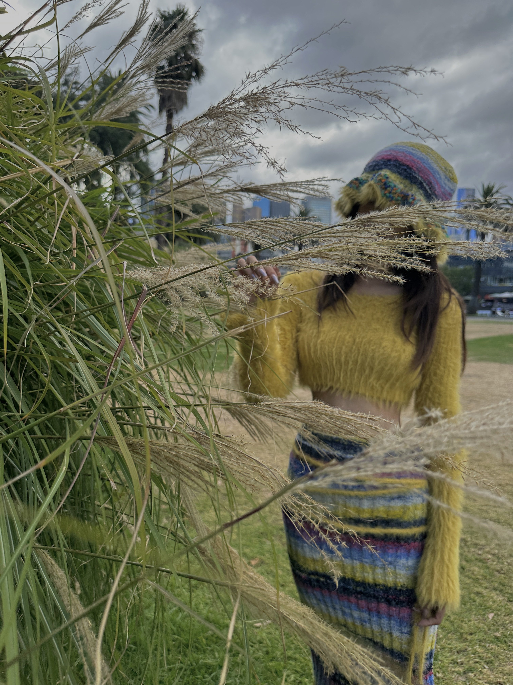
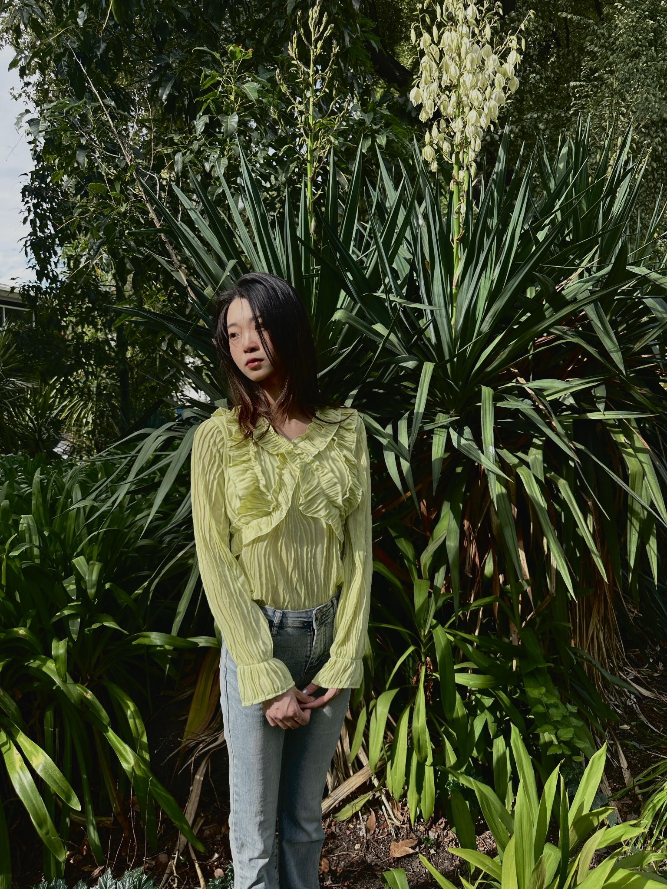
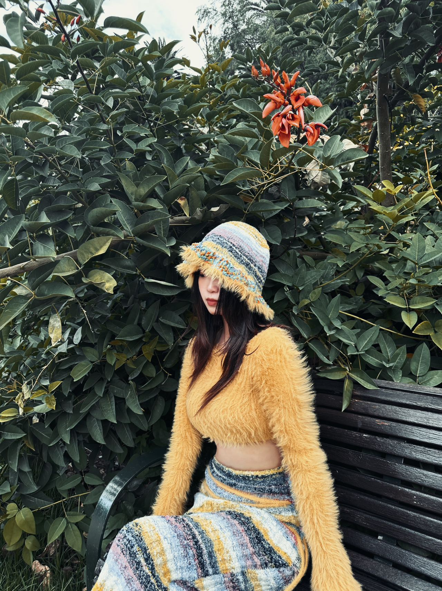

"The trees hide me from this world"



I enjoy nature, whenever I have troubles I go for a walk in the park, the smell of plants and lush foliage seem to hide me. So I chose some clothes with similar colors to the plants for matching shots, and these clothes blended with the plants. I want to share this way of eliminating worries.